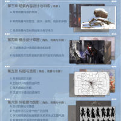
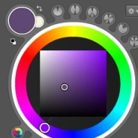

为什么完全不像啊！！！
为什么完全不像啊！！！
这样的画还是撸不起来哦|∀ﾟ
>>No.4236418
(|||ﾟДﾟ)总觉得脖子好长头能飞出来~
(|||ﾟДﾟ)总觉得脖子好长头能飞出来~
>>No.4236567
丑是肯定的 但我没觉得纯度很高啊...
丑是肯定的 但我没觉得纯度很高啊...
我是原PO 我次奥 没过啊 艹艹艹
>>No.4242667
大概意思就是设计太垃圾了...不过看我有点基础 先上着 跟不上就T掉 尼玛啊
大概意思就是设计太垃圾了...不过看我有点基础 先上着 跟不上就T掉 尼玛啊
>>No.4242692
(|||ﾟДﾟ)好严……
po加油啊
(|||ﾟДﾟ)好严……
po加油啊
诸君 被锁ip了怎么办
电脑上不了a岛好想死
电脑上不了a岛好想死
>>No.4245420
为什么会被锁屁股呢
为什么会被锁屁股呢
>>No.4236418
( ´_ゝ`)嘛，所以说po报的是什么班，角色原画？那个更要求创意，我之前是看po基本功还好才说必过的，po画这个人设什么的确差了
( ´_ゝ`)嘛，所以说po报的是什么班，角色原画？那个更要求创意，我之前是看po基本功还好才说必过的，po画这个人设什么的确差了
>>No.4242663
左边那条腿上,那么大块的紫色和青色...纯度真的太高了
用暗色压一压会好很多
看po之前黑色系的画其实真的不错,多研究下配色吧
左边那条腿上,那么大块的紫色和青色...纯度真的太高了
用暗色压一压会好很多
看po之前黑色系的画其实真的不错,多研究下配色吧

>>No.4249760
原画班...看这内容我觉得我没啥问题啊...我设计好我还报啥班...
原画班...看这内容我觉得我没啥问题啊...我设计好我还报啥班...

>>No.4252225
吸了下色 这个范围算是高的吗？我整张图感觉很少有过中线的啊....我肉眼不觉得很跳啊 腿上那块明度对比我是降低了的 求解释(;´Д`)
吸了下色 这个范围算是高的吗？我整张图感觉很少有过中线的啊....我肉眼不觉得很跳啊 腿上那块明度对比我是降低了的 求解释(;´Д`)
>>No.4260379
颜色的概念很多是相对来说的，可能po对色调掌握还不是太熟练。单独来看的确不算鲜艳，但是和身上其他部分主要都是橙黄色调对比的话就有点跳。(・ω・)色块太大也可能是问题，人物与衣物的色块位置大小分布也要像构图一样认真对待。
颜色的概念很多是相对来说的，可能po对色调掌握还不是太熟练。单独来看的确不算鲜艳，但是和身上其他部分主要都是橙黄色调对比的话就有点跳。(・ω・)色块太大也可能是问题，人物与衣物的色块位置大小分布也要像构图一样认真对待。
>>No.4261403
哦哦 感谢！请问有什么练习色彩的方法吗？我现在还处于用色彩画求素描关系不乱的阶段(;´Д`)
哦哦 感谢！请问有什么练习色彩的方法吗？我现在还处于用色彩画求素描关系不乱的阶段(;´Д`)
>>No.4271534
_(:3」∠)_色彩真的很难讲解，现在市面上的书的水平也良莠不齐，不像素描那样好坏比较绝对，有老司机带是最好的。如果po是想学原画，多看多临摹欧美的原画就好了，之前先找些色彩原理的书看看吧
_(:3」∠)_色彩真的很难讲解，现在市面上的书的水平也良莠不齐，不像素描那样好坏比较绝对，有老司机带是最好的。如果po是想学原画，多看多临摹欧美的原画就好了，之前先找些色彩原理的书看看吧
>>No.4260379
其实就是紫色比较跳啦，我感觉一般用紫色的时候都要注意一下，降低一点纯度|-` )
其实就是紫色比较跳啦，我感觉一般用紫色的时候都要注意一下，降低一点纯度|-` )
每天日常( ・_ゝ・)